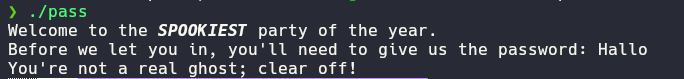
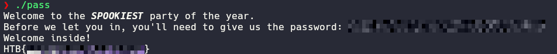
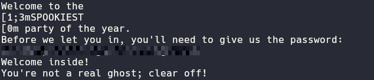
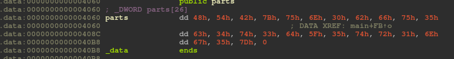

SpookyPass
Created: August 3, 2025 10:02 PM Difficulty: Very Easy Category:
rev
This challenge gives us a binary that asks us for a password

So we know that this challenge consists on searching the password in
order to get access, first lets dive into ida/ghidra in
order to decompile the binary and understand the logic behind the
authentication.
int __fastcall main(int argc, const char **argv, const char **envp)
{
unsigned int i; // [rsp+4h] [rbp-BCh]
char *v5; // [rsp+8h] [rbp-B8h]
char v6[8]; // [rsp+10h] [rbp-B0h] BYREF
_BYTE v7[10]; // [rsp+18h] [rbp-A8h] BYREF
__int64 v8; // [rsp+22h] [rbp-9Eh]
char s[136]; // [rsp+30h] [rbp-90h] BYREF
unsigned __int64 v10; // [rsp+B8h] [rbp-8h]
v10 = __readfsqword(0x28u);
*(_QWORD *)v6 = 0;
memset(v7, 0, sizeof(v7));
v8 = 0;
puts("Welcome to the \x1B[1;3mSPOOKIEST\x1B[0m party of the year.");
printf("Before we let you in, you'll need to give us the password: ");
fgets(s, 128, _bss_start);
v5 = strchr(s, 10);
if ( v5 )
*v5 = 0;
if ( !strcmp(s, "<REDACTED>") )
{
puts("Welcome inside!");
for ( i = 0; i <= 0x19; ++i )
v6[i] = parts[i];
puts(v6);
}
else
{
puts("You're not a real ghost; clear off!");
}
return 0;
}
ida/ghidra sent us to the entry function reading a
little bit of the code, we see that there is a conditional that depends
on the comparation between our input and the string
<REDACTED> which we could deduce is the asked
password. Let’s put this in the binary and check the behavior.

As we can see the flag is revealed.
Beyond the binary
- This challenge could be solved without using any de-compiler just
making
strings pass and reading the context of the
un-obfuscated strings, we could be able of deduce the required
password.

image.png
- Another way to get the flag is by reading a little bit more the
decompiled code, specially on
for ( i = 0; i <= 0x19; ++i )
v6[i] = parts[i];
puts(v6);
Where in v6 is being stored something and then printed,
with a bit of experience we could deduce that chars are being appended
to v6 (clearly the chars of the flag), so we need to locate
where the variable parts is stored in the binary, here our
de-compiler is very useful because with just one click we are redirect
to the content

image.png
here you just have to decode the content and get your flag.
Home